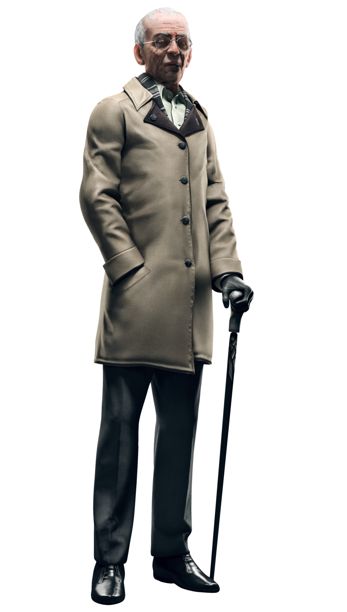
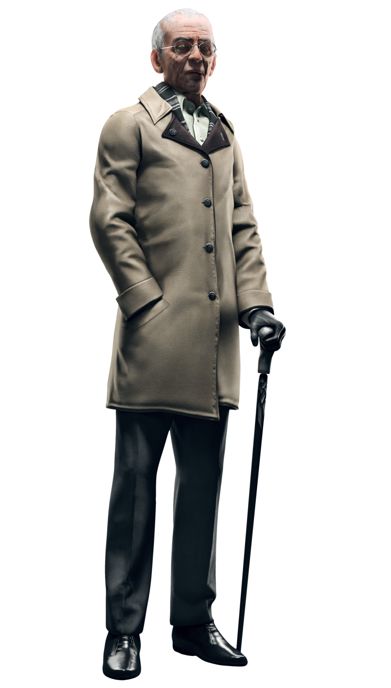

Lucky Quinn
Against CTOS
Aiden Pearce
Against CTOS
Family
Nicole Pearce
Sister

Lena Pearce
Murdered Niece

Jackson Pearce
Niece
Plot
The plot of Watch Dogs is Aiden Pearce is a hacker that has hacked a system called ctOS (Central Operating System). When Aiden takes his hacking skills too far and hacks the wrong people they retaliate by killing his niece but Aiden Pearce swears vengeance on ctOS and all who control it.
Aiden Pearce is a highly advanced hacker and also a criminal. When he loses his adorable niece named Leena Pearce who killed by assassination attempt. He hack the communication system of Chicago city. Then he uses his special smart phone to find the criminal who were involve in assassination and hunt by them one by one. But Damien who was a former partner of Aiden Pearce, he being a thorn in ones side for him because he kidnapped Aiden's younger sister. Now Aiden Pearce mission will have also save her sister as well as take revenge for killing his niece.